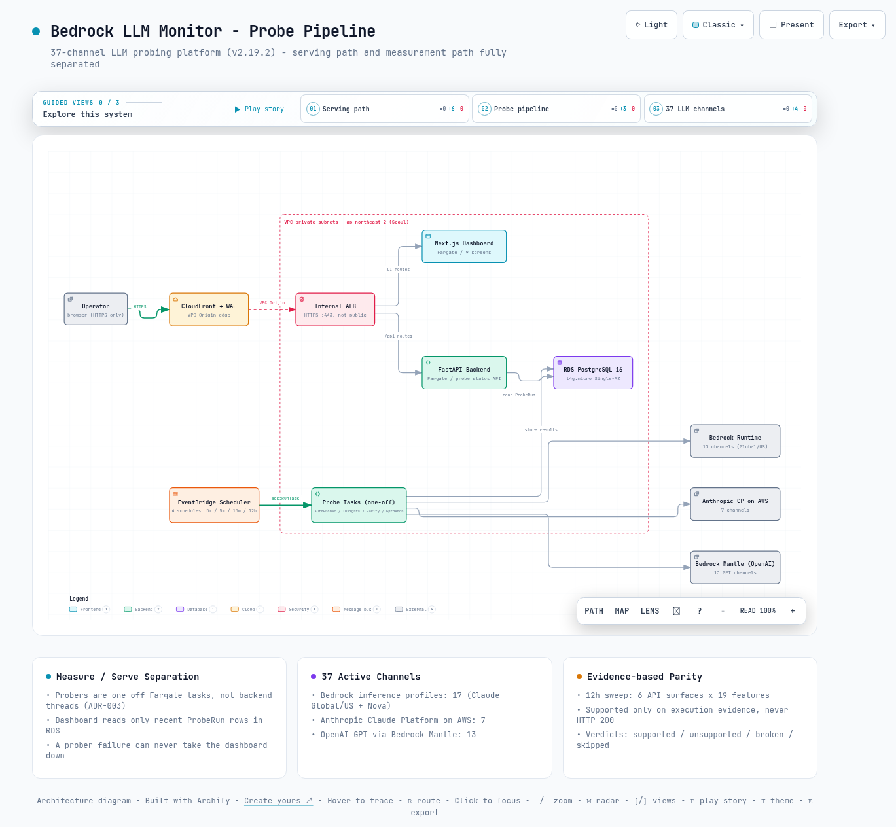

01문제 정의 - 무엇을 왜 측정하는가
같은 Claude 모델이라도 호출 경로에 따라 다른 서비스가 됩니다. Bedrock Global 추론 프로파일(global.*), Bedrock US 프로파일(us.*), Anthropic Claude Platform on AWS(vendor-hosted endpoint), OpenAI GPT via Bedrock Mantle까지 네 갈래 경로는 TTFT, 처리량, 가격, 지원 기능이 제각각이고, 그 차이는 리전 상황과 모델 버전에 따라 계속 변합니다. 운영자가 "이 워크로드는 어느 채널로 태울 것인가"를 결정하려면 동일 조건 병렬 실측이 필요하다는 것이 이 프로젝트의 출발점입니다.
두 번째 문제는 기능 지원 매트릭스입니다. 제공자 문서는 "이 모델이 이 API surface에서 tool use / 캐싱 / structured output을 지원하는가"에 대해 채널별 차이를 다 말해주지 않고, 파라미터가 조용히 무시되는 경우도 있습니다. ADR-021은 v2.10.0까지 쓰던 수작업 스크린샷 증명 방식이 카탈로그 확장과 함께 유지 불가능해졌다고 기록합니다. 그래서 지원 여부 자체를 주기적으로 실행해서 증명하는 패리티 런이 추가되었습니다.
측정 대상 채널은 v2.19.1에서 42개에서 37개로 조정되었습니다. OpenAI 1P direct 경로(Path 5, 5개 채널)는 사용자 결정으로 노출에서 제외하되 코드와 DB 행은 보존하는 3중 스위치(CDK ENABLE_OPENAI_1P=false, backend visibility.py 조회 필터, frontend EXCLUDED_FAMILIES)로 처리되었습니다.
| 채널 그룹 | 채널 수 | 구성 |
|---|---|---|
| Bedrock 추론 프로파일 | 17개 | Claude 8종 × Global/US 프로파일 16개 + Nova 2.0 Lite (US) 1개 |
| Anthropic CP on AWS | 7개 | Fable 5, Opus 5/4.8/4.7, Sonnet 5/4.6, Haiku 4.5 - 기동 시 /v1/models 자동 발견 |
| OpenAI via Bedrock Mantle | 13개 | GPT 5.4(3리전), 5.5(2리전), 5.6 Sol(2리전)/Terra(3리전)/Luna(3리전) |
| OpenAI 1P direct | 5개 (휴면) | v2.19.1부터 비노출 - 코드/DB 보존, 등록 skip |
02아키텍처 - 프로브 파이프라인과 8개 CDK 스택
서비스 경로는 CloudFront VPC Origin → 내부 ALB(HTTPS:443) → ECS Fargate 서비스 2개(FastAPI backend, Next.js standalone frontend) → RDS PostgreSQL 16(t4g.micro, Single-AZ)입니다. ALB를 인터넷에 노출하지 않고 CloudFront VPC Origin으로 감싼 것이 ADR-001의 결정이고, 모든 외부 인입은 HTTPS만 허용합니다. 배포 리전은 ap-northeast-2(서울)입니다.
측정 파이프라인은 서비스 경로와 완전히 분리되어 있습니다. v1에서는 auto-prober가 backend 프로세스 안의 daemon thread였지만, v2에서는 EventBridge Scheduler가 주기마다 일회성 Fargate 태스크를 RunTask로 띄우는 구조로 바뀌었습니다(ADR-003). backend의 auto_prober.py는 run_cycle() 함수만 내보내고, auto_prober_runner.py가 CLI 엔트리포인트(--once)를 맡습니다. 프로브 상태 API도 in-process 상태가 아니라 DB의 최근 ProbeRun 행을 source of truth로 씁니다.
| 스케줄 | 주기 | 태스크 명령 | 역할 |
|---|---|---|---|
| AutoProberSchedule | rate(5 minutes) | python -m auto_prober_runner --once | 37개 채널 × 워크로드 1종 프로빙 |
| InsightsSchedule | rate(5 minutes) | python -m insights_runner --window 6h | Sonnet 4.6으로 최근 6시간 요약 생성 |
| ParityRunSchedule | rate(12 hours) | python -m parity_runner --once | 모델 × surface × 피처 실행 증거 스윕 |
| GptBenchSchedule | rate(15 minutes) | python -m gptbench_runner --once | Mantle GPT 8채널 × 10회 TTFB/TTFT 벤치 |
docs/architecture.md는 EventBridge 스케줄을 3개로 기술하지만, scheduler-stack.ts에는 v2.18.0에서 추가된 GptBench까지 4개가 정의되어 있습니다. 또 저장소 루트의 config.yaml(모델 4개, SQLite, us-east-1)은 v1 잔재로, 현재 backend / CDK 코드 어디에서도 참조하지 않습니다. 실제 프로브 주기는 config가 아니라 EventBridge 스케줄 정의가 결정합니다.
인프라는 CDK v2 TypeScript 스택 8개로 관리됩니다. Network(VPC, NAT GW, PrivateLink 엔드포인트 9+1개), Data(RDS, Secrets, SSM), Cluster(ECS 클러스터, ECR), AgentCore(챗봇 메모리), AppServices(Fargate 2개, ALB), Edge(CloudFront, WAF), Scheduler(스케줄과 태스크 정의), Observability(알람 7개, 대시보드, SNS) 순으로 의존 관계를 따라 배포합니다. 재사용 L3 construct(fargate-service.ts, pinned-image.ts)가 서비스 정의를 공유합니다.
03측정 지표와 워크로드 프리셋
프로브 한 사이클은 37개 채널 전체에 워크로드 카테고리 하나를 적용합니다. 카테고리는 6종이고 사이클마다 라운드로빈으로 회전하므로, 같은 카테고리는 30분(5분 × 6)마다 다시 측정됩니다. 정의는 backend/auto_prober.py의 WORKLOAD_PRESETS가 source of truth이고, 결과 행에는 probe_results.category 컬럼이 남아 카테고리별 필터링이 가능합니다.
| id | 라벨 | 측정 의도 |
|---|---|---|
| chat-short | 짧은 대화 | TTFT에 민감한 짧은 응답 |
| reasoning | 추론 | 복잡한 추론, 큰 max_tokens |
| code-gen | 코드 생성 | 코드 출력 품질과 처리량 |
| summarize | 요약 | 긴 입력 → 짧은 출력 |
| structured | JSON 추출 | 텍스트 → JSON-only 추출 |
| translate | 번역 | 영한 기술 번역, 뉘앙스 보존 |
호출 하나에서 뽑는 지표는 여섯 가지입니다. TTFT(요청 → 첫 토큰, ms), Total Latency(요청 → 마지막 토큰, 클라이언트 측, ms), Server Latency(Bedrock이 보고하는 내부 처리 시간, 네트워크 오버헤드 제외, ms), TPS(첫 토큰 이후 출력 처리량, tok/s), 입출력 토큰 수, 그리고 stop reason(end_turn / max_tokens / tool_use 등 enum)입니다. 토큰 수는 backend/pricing.py의 모델별 단가 테이블과 결합해 30일 비용 예측의 입력이 됩니다.
원칙: 지연 지표를 클라이언트 관측(TTFT / Total)과 서버 보고(Server Latency)로 분리해 두면, 채널 간 차이가 네트워크 경로 때문인지 모델 처리 때문인지 데이터로 구분할 수 있습니다.
04패리티 스윕 딥다이브 - 실행 증거 판정
패리티 런의 설계 질문은 "지원 여부를 무엇으로 판정하는가"였습니다. ADR-021의 답은 HTTP 200은 판정 근거로 불충분하다는 것입니다. 파라미터가 조용히 무시되거나, 요청은 성공해도 기능이 실제로 동작하지 않는 경우가 흔하기 때문입니다. 그래서 backend/parity/ 패키지는 실제 API를 호출한 뒤 응답 내용의 증거 검사를 통과했을 때만 supported로 판정합니다.
4.1 매트릭스 크기와 증거 검사
스윕 범위는 모델 × API surface 6종 × 피처 19종입니다. surface는 converse, invoke_model, messages, messages_mantle, chat_completions, responses이고(catalog.py:SURFACES), 피처는 basic / streaming / system_instructions / tool_use / structured_output / reasoning / caching / adaptive_thinking / count_tokens / batches / web_search / computer_use / reasoning_effort / json_schema / url_sources / memory_tool / code_execution / files_api / models_api 19종입니다. ADR-021 초기 설계는 surface 5종 × 피처 7종이었고, ADR-022(Mantle Messages surface)와 ADR-023(피처 19종 확장)을 거쳐 현재 크기가 되었습니다.
- 도구 카나리 왕복 - 도구 정의를 보내고 모델이 실제로 그 도구를 호출하는지 확인합니다.
- 시스템 지시 카나리 - 시스템 프롬프트에 심은 표식이 응답에 반영되는지 확인합니다.
- JSON 파싱 + 필수 키 - structured output이 유효한 JSON이고 요구한 키를 담는지 검사합니다.
- cached-token 카운트 - 반복 요청에서 캐시 토큰 카운트가 0보다 큰지로 캐싱 동작을 증명합니다.
- 스트림 델타 2개 이상 - 스트리밍이 실제 조각 단위로 도착하는지 확인합니다.
판정 로직은 engine.py의 순수 함수로 분리되어 단위 테스트 대상입니다. 결과는 supported / unsupported / broken / skipped 네 값으로 나뉩니다. 제공자가 "깨끗한 미지원 거부" 시그니처(unsupported_parameter 등)를 돌려주면 unsupported, 그 외 오류나 증거 실패는 broken, 해당 없음(비 reasoning 모델의 reasoning 피처 등)은 skipped입니다. skipped를 unsupported와 구분하는 것이 ADR-023이 말하는 "정직한 제외"입니다. run마다 결과와 함께 증거 JSON, 지연 시간, 오류가 parity_runs / parity_results 테이블에 남고, /parity 화면에서 셀을 클릭하면 증거 모달로 원본을 확인할 수 있습니다.
ADR-021이 스스로 기록한 사고입니다. 첫 실행에서 max_tokens=64 절단이 structured_output 전량을 false-Broken으로 만들었고, v2.11.1에서 피처별 토큰 예산(max_tokens_for)으로 수정되었습니다. Broken 셀은 증거의 response_snippet으로 프로브와 모델 어느 쪽 결함인지 확인한 뒤에 신뢰해야 합니다.
4.2 멀티 채널 비교가 실제로 찾아낸 것
같은 검사를 채널별로 돌리면 문서에 없는 격차가 드러납니다. ADR-021이 기록한 실측 발견은 Mantle ChatCompletions surface의 전면 미지원(Responses API만 동작), GPT 5.4의 reasoning_tokens 미보고, Claude Fable 5 캐싱의 surface별 차이 등입니다. 비용 측면에서도 GPT 5.6 세대는 Bedrock in-region 가격이 OpenAI 1P와 동일(parity)하지만 5.4 / 5.5는 10% 마크업이 있다는 사실이 카탈로그에 반영되어 있습니다.
05분석 화면 9개
frontend는 Next.js 14 standalone이고, 공용 헤더(AppHeader.tsx)가 9개 페이지를 묶습니다. README의 프로젝트 구조 절에는 "6 routes"라고 남아 있지만, 실제 src/app/에는 루트(/)와 챗봇 전용 /chat을 포함해 라우트는 10개(디렉터리 9개)이며 분석 화면은 9개입니다. 코드 기준으로 9개 페이지를 정리하면 다음과 같습니다.
| 경로 | 화면 | 보여주는 것 |
|---|---|---|
| / | Dashboard | 프로브 상태 + 37개 모델 카드 + 지연/TPS 추이, 워크로드 필터 |
| /models | Model Explorer | 모델별 카드 + Converse/InvokeModel/Messages/Responses 코드 예제 |
| /parity | Parity Run | 모델 × surface × 피처 매트릭스 + 증거 모달 + 수동 트리거 |
| /gpt-on-aws | GPT on AWS | Mantle GPT 8채널 TTFB/TTFT/GAP 벤치, 15분 주기 |
| /cost | Cost | 30일 비용 예측 + 모델별/채널별 비교 |
| /reliability | Reliability | family/채널별 성공률 + 오류 버킷 |
| /efficiency | Efficiency | 카테고리별 가중 0~100 토큰 효율 점수 |
| /analysis | Analysis | stop reason 분포 + 출력 길이 히스토그램 |
| /prompts | Prompts | 프롬프트 세트 CRUD + Bedrock OptimizePrompt (인증 필요) |
화면 외 인터페이스로는 Claude Sonnet 4.6 기반 챗봇이 있습니다. 4개의 커스텀 도구로 시계열 저장소를 조회해 자연어 질문에 답하고, 대화 컨텍스트는 AgentCore Memory에 30일 보존됩니다. GPT on AWS 페이지의 벤치는 별도 방법론을 씁니다. 약 55.8k 토큰의 고정 캐시 프롬프트로 채널당 10회 순차 호출해 TTFB(첫 스트림 이벤트), TTFT(첫 텍스트 델타), GAP(둘의 차이, thinking 근사)을 median / p95로 집계합니다.
06실제 운영 흐름
배포는 runbook(docs/runbooks/deploy.md)이 규정합니다. make verify (CDK lint + typecheck + Jest 71개 + cdk-nag + ruff + pytest 91개 + frontend tsc)를 통과시킨 뒤, arm64 컨테이너 이미지를 immutable tag(v<timestamp>)로 빌드해 ECR에 push하고, CDK deploy에 이미지 URI를 @sha256:<digest>까지 고정해 넘깁니다. frontend 이미지는 RUM 관련 --build-arg가 빌드 타임에 필요합니다.
이 저장소가 실제로 겪고 ADR-010 / ADR-018로 남긴 사고입니다. :latest로 push하면 Docker layer dedupe와 ECS의 이미지 캐시가 겹쳐 새 코드가 반영되지 않은 채 배포가 성공한 것처럼 보입니다. 대응은 immutable tag + digest 고정이었고, 캐시가 이미 오염된 repository는 이름을 바꿔 (bedrock-monitor-backend-v2) 우회했습니다.
스케줄 잡의 조용한 실패도 runbook화되어 있습니다. EventBridge Scheduler role의 ecs:RunTask Resource는 task definition family의 :* wildcard여야 합니다(ADR-011). revision 번호를 박으면 새 revision 배포 후 권한 거부로 silent fail이 나고, EventBridge 지표가 비어 있어 디버깅이 어렵습니다. 진단 표지는 /api/auto-probe/status의 last_run_time이 수 시간 전이거나, /ecs/autoprober 로그 그룹에 5분 내 엔트리가 없는 경우입니다.
데이터 수명 관리는 retention.py가 맡습니다. RETENTION_DAYS(기본 60일)를 초과한 원본 probe_results는 시간 단위 집계 테이블로 이관됩니다. DB 마이그레이션은 backend 기동 시 lifespan에서 pg_advisory_lock과 statement_timeout 30초를 걸고 ADD COLUMN IF NOT EXISTS로만 수행해, 다중 태스크 동시 기동에도 멱등입니다. 관측 계층은 CloudWatch 알람 7개(ALB 5xx / 지연, ECS 태스크 수, RDS CPU / 스토리지 / 커넥션)와 자체 호스팅 RUM(v2.16.5)으로 구성됩니다.
07한계
- 측정 비용이 실비용입니다. 5분마다 37개 채널 실호출, 12시간마다 패리티 스윕(호출당 max_tokens 256~8,000 상한(기본 256, reasoning 2,048, adaptive_thinking 8,000), caching 피처는 2회 호출), 15분마다 GPT 벤치 80회(8채널 × 10회) 호출이 계속 과금됩니다.
- 단일 리전 관측입니다. 프로브는 ap-northeast-2의 Fargate에서 나가므로, 다른 리전 사용자의 체감 지연과는 네트워크 경로가 다릅니다.
- RDS는 t4g.micro Single-AZ입니다. ADR-002가 명시했듯 시계열 데이터 손실을 허용하는 설계이며, 고가용성 요구가 있는 환경에는 그대로 맞지 않습니다.
- 패리티 판정은 프로브 코드 품질에 종속됩니다. 4.1절의 false-Broken 사례처럼 프로브 결함이 매트릭스를 오염시킬 수 있어, Broken 셀은 증거 확인이 전제입니다.
- 문서 동기화가 완전하지 않습니다. README의 "6 routes", architecture.md의 스케줄 3개 기술처럼 서술이 코드보다 늦은 지점이 있어, 수치는 코드에서 재확인해야 합니다.
08결론
이 프로젝트가 보여주는 것은 LLM 관측을 애플리케이션 로그 수집이 아니라 능동 프로빙 문제로 정의한 설계입니다. 측정기를 서비스 프로세스에서 떼어내 EventBridge + 일회성 Fargate 태스크로 만들고, 채널 라벨 규약("Bedrock / Anthropic / OpenAI family (channel)")으로 37개 채널을 한 좌표계에 올리고, 기능 지원 여부는 실행 증거로만 판정합니다.
비슷한 플랫폼을 만들려는 팀이 가져갈 순서는 다음과 같습니다. 1순위는 측정과 조회의 분리(스케줄러 → 일회성 태스크 → DB)입니다. 이것이 없으면 프로버 장애가 대시보드 장애가 됩니다. 2순위는 워크로드 프리셋 라운드로빈으로, 단일 프롬프트 측정이 만드는 착시를 줄입니다. 3순위가 패리티 스윕인데, 실행 증거 판정과 skipped / unsupported 구분 없이 만들면 매트릭스가 신뢰를 잃습니다. 운영 함정(immutable tag, Scheduler IAM wildcard)은 이 저장소의 ADR을 먼저 읽는 것으로 상당 부분 피할 수 있습니다.

--참고 자료
핵심 출처
- whchoi98/model-monitoring - 분석 대상 저장소, v2.19.2 (2026-08-01). README, docs/architecture.md, docs/decisions/ADR-001~024, CHANGELOG.md https://github.com/whchoi98/model-monitoring
공식 문서
- What is Amazon Bedrock? - Amazon Bedrock User Guide https://docs.aws.amazon.com/bedrock/latest/userguide/what-is-bedrock.html
- Cross-Region inference - Amazon Bedrock User Guide https://docs.aws.amazon.com/bedrock/latest/userguide/cross-region-inference.html
- What is Amazon EventBridge Scheduler? - EventBridge Scheduler User Guide https://docs.aws.amazon.com/scheduler/latest/UserGuide/what-is-scheduler.html
- AWS Fargate for Amazon ECS - Amazon ECS Developer Guide https://docs.aws.amazon.com/AmazonECS/latest/developerguide/AWS_Fargate.html